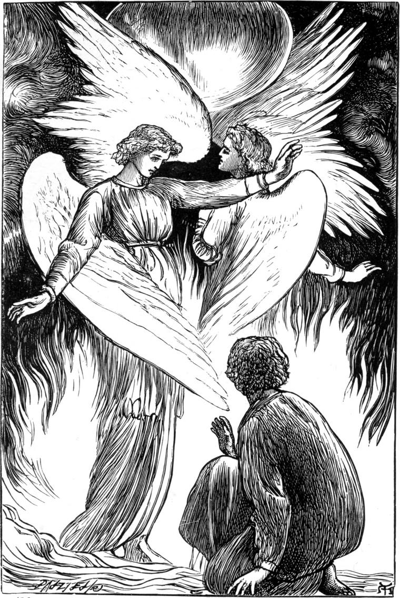

Either they were over, or were only beginning; for, the next winter, while Willie was at college, grannie was taken ill; and although they sent for him to come home at once, she had climbed higher ere he arrived. When they opened her will, they found that she had left everything to Willie. There was more than a hundred pounds in ready money, and property that brought in about fifty pounds a-year—not much to one who would have spent everything on himself, but a good deal to one who loved other people, and for their sakes would contrive that a little should go a long way.
So Willie was henceforth able to relieve his father by paying all his own college expenses. He laid by a little too, as his father wished him, until he should see how best to use it. His father always talked about using never about spending money.
When he came home the next summer, he moved again into his own old room, for Agnes slept in a little closet off her mother's, and much preferred that to a larger and more solitary room for herself. His mother especially was glad to have him under the same roof once more at night. But Willie felt that something ought to be done with the room he had left in the ruins, for nothing ought to be allowed to spoil by uselessness. He did not, however, see for some time to what he could turn it.
I need hardly say that he kept up all his old friendships. No day passed while he was at home without his going to see some one of his former companions—Mr Willett, or Mr Spelman, or Mr Wilson. For Hector, he went to see him oftenest of all, he being his favourite, and sickly, and therefore in most need of attention. But he greatly improved his acquaintance with William Webster; and although he had now so much to occupy him, would not be satisfied until he was able to drive the shuttle, and work the treadles and the batten, and, in short, turn out almost as good a bit of linen as William himself—only he wanted about twice as much time to it.
One day, going in to see Hector, he found him in bed and very poorly.
"My shoemaking is nearly over, Mr Willie," he said. "But I don't mind much; I'm sure to find a corner in the general business ready for me somewhere when I'm not wanted here any more."
"Have you been drinking the water lately?" asked Willie.
"No. I was very busy last week, and hadn't time, and it was rather cold for me to go out. But for that matter the wind blew in through door and window so dreadfully—and it's but a clay floor, and firing is dear—that I caught a cold, and a cold is the worst thing for me—that is for this poor rickety body of mine. And this cold is a bad one."
Here a great fit of coughing came on, accompanied by symptoms that Willie saw were dangerous, and he went home at once to get him some medicine.
On the way back a thought struck him, about which, however, he would say nothing to Hector until he should have talked to his father and mother about it, which he did that same evening at supper.
"I'll tell you what, Hector," he said, when he went to see him the next day—"you must come and occupy my room in the ruins. Since grannie went home I don't want it, and it's a pity to have it lying idle. It's a deal warmer than this, and I'll get a stove in before the winter. You won't have to work so hard when you've got no rent to pay, and you will have as much of the water as you like without the trouble of walking up the hill for it. Then there's the garden for you to walk in when you please—all on a level, and only the little stair to climb to get back to your own room."
"But I should be such a trouble to you all, Mr Willie!"
"You'd be no trouble—we've two servants now. If you like you can give the little one a shilling now and then, and she'll be glad enough to make your bed, and sweep out your room; and you know Tibby has a great regard for you, and will be very glad to do all the cooking you will want—it's not much, I know: your porridge and a cup of tea is about all. And then there's my father to look after your health, and Agnes to amuse you sometimes, and my mother to look after everything, and"—
Here poor Hector fairly broke down. When he recovered himself he said—
"But how could gentle folks like you bear to see a hump-backed creature like me crawling about the place?"
"They would only enjoy it the more that you enjoyed it," said Willie.
It was all arranged. As soon as Hector was able to be moved, he was carried up to the Ruins, and there nursed by everybody. Nothing could exceed his comfort now but his gratitude. He was soon able to work again, and as he was evidently happier when doing a little towards the general business, Mr Macmichael thought it best for him.
One day, Willie being at work in his laboratory, and getting himself half-stifled with a sudden fume of chlorine, opened the door for some air just as Hector had passed it. He stood at the door and followed him down the walk with his eyes, watching him as he went—now disappearing behind the blossoms of an apple-tree, now climbing one of the little mounds, and now getting up into the elm-tree, and looking about him on all sides, his sickly face absolutely shining with pleasure.
"But," said Willie all at once to himself, "why should Hector be the only invalid to have this pleasure?"
He found no answer to the question. I don't think he looked for one very hard though. And again, all at once, he said to himself—
"What if this is what my grannie's money was given me for?"
That night he had a dream. The two questions had no doubt a share in giving it him, and perhaps also a certain essay of Lord Bacon—"Of Building," namely—which he had been reading before he went to bed.
He dreamed that, being pulled up in the middle of the night by his wheel, he went down to go into the garden. But the moment he was out of the back door, he fancied there was something strange going on in his room in the ruins—he could not tell what, but he must go and see. When he climbed the stairs and opened the door, there was Hector Macallaster where he ought to be, asleep in his bed. But there was something strange going on; for a stream, which came dashing over the side of the wooden spout, was flowing all round Hector's bed, and then away he knew not whither. Another strange thing was, that in the further wall was a door which was new to him. He opened it, and found himself in another chamber, like his own; and there also lay some one, he knew not who, in a bed, with a stream of water flowing all around it. There was also a second door, beyond which was a third room, and a third patient asleep, and a third stream flowing around the bed, and a third door beyond. He went from room to room, on and on, through about a hundred such, he thought, and at length came to a vaulted chamber, which seemed to be over the well. From the centre of the vault rose a great chimney, and under the chimney was a huge fire, and on the fire stood a mighty golden cauldron, up to which, through a large pipe, came the water of the well, and went pouring in with a great rushing, and hissing, and bubbling. From the other side of the cauldron, the water rushed away through another pipe into the trough that ran through all the chambers, and made the rivers that flowed the beds of the sleeping patients. And what was most wonderful of all—by the fire stood two angels, with grand lovely wings, and they made a great fanning with their wings, and so blew the fire up loud and strong about the golden cauldron. And when Willie looked into their faces, he saw that one of them was his father, and the other Mr Shepherd. And he gave a great cry of delight, and woke weeping.
